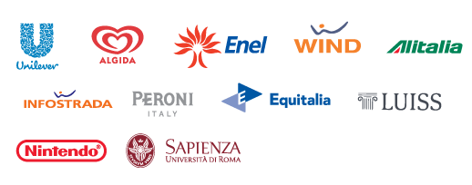

Experience
Workshare
Lead Product Design Engineer / Front-end Engineer
Front-end engineering, UI engineering and some Product Design experiments.
Workshare
Senior Front end developer
Cross-functional teams, Agile methodologies, mentoring, development in scalable applications, programming principles, unit testing, Javascript, Backbone, TDD, React, Authoring and maintaining HTML and CSS for complex, rapidly-iterated projects.
Numidia Srl
Founder & Front end developer
Management of a digital agency, web development, project design, management. I worked on Mobile Applications, designed Web service APIs and backends, developed payment gateways and E-learning solutions for several high-profile clients. Clients: Sapienza University of Rome, several cinema production companies.
Linfa Srl
Web developer
Web developer responsible for the development and operation of multiple websites and e-learning platforms. I worked directly with clients such as Alitalia or Polizia di Stato.
Estrogeni Srl
Web developer
Created visual designs and developed websites, banners, e-newsletters, contests, branding. I worked for Wind, Infostrada, Eagle Pictures, BIM Distribuzione.
Egolab Srl
Web developer
Design, development and management of client websites, applications, campaigns. I developed code for high-traffic websites. Clients: Unilever, Nintendo, Peroni SPA, Algida.
Consorzio interuniversitario FOR.COM
Web developer
Multimedia contents for the university. Scorm / As3 / PHP / MySQL. Created graphic design for websites, interactive CDs and banners.
Netqps
Founder - Web Developer
First steps! Design websites from conception to production. Seven years of self-taught hard work.
Recent activities and references
Latest OSS projects
Article
Article
Research
Bandit: Authoring and maintaining HTML and CSS for complex, rapidly-iterated projects
Mentoring
The Prettiest Resume You'll See All Week
https://www.themuse.com/advice/the-prettiest-resume-youll-see-all-week
Awwwards Honorable Mention
http://www.albinotonnina.com
cssreel.com and other small awards websites - Winner of the day
Please have a look at my LinkedIn profile for a longer list.
Past Clients
You can have a look at my past jobs and clients in this video hosted on Vimeo
Over the years I worked for:
